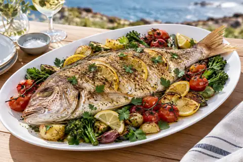

September Snapper Challenge
Enter your best verified catch, add a recipe and climb the monthly standings. Only your largest approved fish counts.
Port Phillip Bay
Compare the model forecast with current visibility reports in the community chat.
Join the conversation
Five useful channels inside one Messenger community.
Beginners FAQs
Gear, safety and where to startFind a Buddy
Dive plans and partnersGeneral Banter
Stories and catchesSell Stuff
Community gear listingsViz Reports
Broad-area reportsMonthly catch leaderboard
Your single best verified catch counts. Placement bonuses remain provisional until the month closes.
What should October’s species be?
Choose one species. Current vote total: 186.
Members vote for their favourite approved catches; the members behind the top three receive the bonus.
Recent approved catches
Snapper, from water to table
Know the fish, check the current rules and make good use of a responsible catch.
Snapper
Silver to crimson with bright blue spots. Smaller snapper are commonly called pinkies, and the species occurs along Victoria’s coastline.
- Minimum size
- 28 cm
- Daily bag limit
- 10 total
- Large fish
- Maximum 3 at 40 cm+
Rules checked against the Victorian Fisheries Authority in September 2026. Always verify before diving.

Whole roasted snapper with tomato and herbs
A generous tray bake for a shared table, with lemon, garlic and the fish’s own roasting juices doing most of the work.